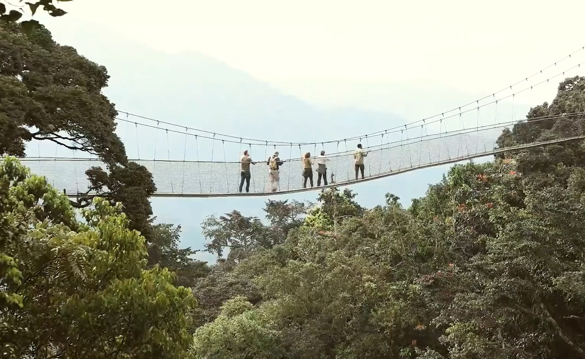

Embark on an extraordinary 15-day trans-boundary expedition traversing the finest wilderness, primate, and cultural sanctuaries of Rwanda and Uganda. Starting in the verdant hills of Kigali and culminating at Entebbe on Lake Victoria, this comprehensive grand safari connects two renowned East African nations. Track wild chimpanzees and walk high above ancient rainforest canopies in Nyungwe Forest, encounter rare golden monkeys in Volcanoes National Park, and stand face-to-face with endangered mountain gorillas in the mist-shrouded jungles of Bwindi Impenetrable National Park. Experience premier savannah game drives and seek rare tree-climbing lions in Queen Elizabeth National Park, cruise the hippo-laden waters of the Kazinga Channel, explore the primate capital of Kibale Forest, witness the mighty Victoria Nile crash through Murchison Falls, and track wild white rhinos on foot at Ziwa Rhino Sanctuary. Designed for discerning wildlife enthusiasts, this safari offers the quintessential East African great ape and savannah odyssey.

Arrival at Kigali International Airport, Orientation Tour & Hotel Transfer
Scenic Transfer to Nyungwe Forest National Park via King's Palace Museum in Nyanza
Chimpanzee Tracking in Nyungwe Rainforest & Suspended Canopy Walkway
Scenic Shoreline Drive along Lake Kivu to Volcanoes National Park
Endangered Golden Monkey Tracking & Iby'Iwacu Cultural Village Experience
Scenic Cross-Border Transfer to Bwindi Impenetrable National Park
Mountain Gorilla Trekking in Bwindi Rainforest & Batwa Cultural Encounter
Transfer to Queen Elizabeth National Park via Ishasha Tree-Climbing Lions
Kasenyi Plains Morning Game Drive & Kazinga Channel Afternoon Boat Safari
Scenic Transfer to Kibale Forest National Park & Crater Lakes Exploration
Chimpanzee Tracking in Kibale Forest & Bigodi Wetland Sanctuary Guided Walk
Scenic Drive Northward to Murchison Falls National Park via Albertine Escarpment
Northern Delta Morning Savannah Game Drive & Victoria Nile Boat Cruise to the Falls
Top of Murchison Falls Excursion, Ziwa Rhino Tracking & Transfer to Entebbe
Entebbe City Exploration, Lake Victoria Relaxation & Airport Departure
Upon arrival at Kigali International Airport, you will be warmly welcomed by your professional Roots East Africa Adventure safari driver-guide. After introductions and luggage assistance, transfer to your hotel in Kigali. Depending on your arrival schedule, embark on an introductory orientation tour of Rwanda's clean and vibrant capital city. Visit the poignant Kigali Genocide Memorial at Gisozi to gain meaningful insight into the country's transformative journey of resilience and unity, and explore local artisan craft centers. In the evening, gather for a safari briefing covering the cross-border journey ahead before settling in for dinner and a restful overnight stay.
After breakfast, check out and begin your journey southwestward toward Nyungwe Forest National Park, traversing the terraced hillsides that give Rwanda its moniker, the Land of a Thousand Hills. En route, stop at Nyanza to tour the historical King's Palace Museum, an authentic reconstruction of the traditional royal residence. Marvel at the long-horned Inyambo royal cattle and learn about the sacred traditions and poetry of ancient Rwandan royalty. Following lunch along the route, proceed through the southern highlands into the lush montane rainforest of Nyungwe, one of Africa's oldest and best-preserved montane ecosystems. Arrive at your lodge in the late afternoon for dinner surrounded by misty rainforest slopes.
Rise before dawn for an early breakfast, then transfer to the park visitor center at Uwinka or Cyamudongo for an essential briefing by park rangers. Trek into the ancient, dense jungle accompanied by skilled trackers to locate a habituated troop of wild chimpanzees. Listen to their resonant pant-hoots echoing across the canopy, and enjoy an unforgettable hour observing them foraging, grooming, and leaping through the trees. Return to the lodge for lunch and some relaxation. In the afternoon, embark on the renowned Nyungwe Canopy Walk—a secure 160-meter-long suspension bridge hanging 70 meters above the forest floor. Take in breathtaking aerial vistas across the unbroken rainforest canopy, spotting rare birds, butterflies, and monkeys among the treetops.
Following a relaxed breakfast overlooking the forest, embark on a remarkably scenic drive heading northward along the picturesque shores of Lake Kivu. Travel past shimmering blue bays, terraced tea and coffee plantations, and rural fishing villages where fishermen maneuver traditional three-hulled wooden canoes. Pause at Karongi or Rubavu for lunch and a leisurely lakeside stroll, soaking in the serene tropical atmosphere. In the afternoon, ascend into the Virunga volcanic highlands toward Musanze, the gateway town to Volcanoes National Park. Check in to your safari lodge facing the dramatic chain of dormant volcanic peaks, where dinner and fireside evening relaxation await.
After an early breakfast, head to the Kinigi park headquarters for a briefing on tracking the rare and endangered golden monkeys endemic to the high-altitude bamboo zones of the Virunga volcanoes. Set off with expert rangers into the bamboo forest, watching these energetic, golden-furred primates jump playfully through the branches and feed on tender shoots right beside you. Return to the lodge for lunch and freshening up. In the afternoon, visit the Iby'Iwacu Cultural Village (Gorilla Guardians Village) for a deeply authentic cultural immersion. Experience vibrant Intore drumming and dance performances, learn about traditional herbal medicine and archery, and discover how community-based tourism supports wildlife conservation.
Enjoy breakfast against the backdrop of Mount Sabyinyo and Mount Gahinga, then begin your scenic cross-border transfer into Uganda via the Cyanika or Katuna border post. After completing smooth immigration and customs formalities, cross into the southwestern highlands of Uganda, renowned as the "Switzerland of Africa." Marvel at the steep, terraced hillside farms, meandering mountain passes, and dense forested valleys as you journey toward Bwindi Impenetrable National Park, a UNESCO World Heritage Site harboring roughly half of the world's remaining wild mountain gorillas. Arrive at your rainforest lodge in time for dinner and an early night ahead of tomorrow's tracking adventure.
Following an energizing early breakfast, report to the UWA park headquarters for a comprehensive briefing on gorilla trekking etiquette. Assigned to a habituated gorilla family, venture into the primeval rainforest led by expert rangers and armed trackers macheteing a path through the dense understory. Hikes can take between 2 to 6 hours across rugged slopes, but the moment you encounter the gorilla troop is profound. Spend one magical hour watching the dominant silverback, nursing mothers, and playful infants in their untamed natural habitat. Following this encounter, return to the base to receive your official trekking certificate. In the late afternoon, enjoy an inspiring cultural visit with the indigenous Batwa community to learn about their ancestral forest survival traditions, ancient fire-making skills, and hunting lore.
After breakfast, check out and drive northward through the Kigezi highlands, descending toward the southern boundary of Queen Elizabeth National Park. Enter through the wilderness of the Ishasha sector, world-famous for its rare population of tree-climbing lions. Embark on a focused mid-day game drive scanning the sprawling branches of ancient fig and acacia trees, where these big cats often lounge to escape tsetse flies and catch cool breezes. Along with lions, look out for large herds of topi, Uganda kobs, Cape buffaloes, and bushbucks. In the afternoon, proceed through the park to the northern Mweya sector, arriving at your lodge in time for a sunset dinner overlooking the Albertine Rift Valley.
Set out at dawn across the sweeping grasslands of the Kasenyi plains, the primary mating territory of the Uganda kob. Morning game drives here provide exceptional predator sightings, including prowling lions, elusive leopards, and spotted hyenas, alongside towering African elephants, buffalo herds, and warthogs framed by the Rwenzori Mountains. Return to your lodge for lunch and midday relaxation. At 2:00 PM, embark on a premier two-hour boat safari along the Kazinga Channel, a 32-kilometer natural waterway linking Lake George and Lake Edward. Drift past dense concentrations of hippos wallowing in the water, massive Nile crocodiles basking on the banks, and herds of elephants coming down to bathe and drink, accompanied by an astonishing variety of waterbirds.
Enjoy breakfast before departing Queen Elizabeth National Park, heading northeast toward Fort Portal and Kibale Forest National Park. The route winds through dramatic volcanic terrain, passing dozens of extinct explosion crater lakes nestled among emerald-green tea plantations and the misty foothills of the Rwenzori range. Pause in Fort Portal for lunch before embarking on a guided exploration of the scenic Ndali-Kasenda crater lake cluster, taking in panoramic viewpoints and visiting local vanilla and tea growers. Continue to your safari lodge bordering Kibale Forest, celebrated globally as the Primate Capital of the World, and relax as the sounds of the equatorial forest take over.
After an early breakfast, assemble at Kanyanchu River Camp for an informative briefing by UWA rangers before embarking on chimpanzee tracking in Kibale Forest. With over 1,500 wild chimpanzees and 12 other primate species, Kibale offers the highest primate diversity in East Africa. Spend an unforgettable hour in close proximity to a habituated chimpanzee community, observing their complex social interactions, communication, and energetic behavior high in the rainforest canopy. Return to the lodge for lunch. In the afternoon, take a guided eco-walk along the wooden boardwalks of the community-run Bigodi Wetland Sanctuary, spotting red colobus, grey-cheeked mangabeys, and exotic birds including the magnificent Great Blue Turaco.
Depart Kibale after breakfast for a captivating cross-country drive heading northward toward Murchison Falls National Park, Uganda's largest and oldest national park. The route traverses rural countryside, lush agricultural estates, and scenic stretches of the Western Rift Valley escarpment overlooking Lake Albert. Pause for a relaxing lunch in the historic town of Hoima before continuing through Biso and the verdant Budongo forest reserve. Arrive at Murchison Falls National Park in the late afternoon, crossing the Victoria Nile to check in at your lodge. Enjoy a delicious dinner and unwind under the vast African night sky.
Begin the day with an early morning game drive across the savannah grasslands of the northern delta, where wildlife thrives in extraordinary numbers. Scan the golden plains for lions, leopards, Rothschild's giraffes, African elephants, Cape buffaloes, Jackson's hartebeests, and waterbucks. Return to your lodge for lunch and some midday rest. At 2:00 PM, board a scheduled river boat safari sailing up the Victoria Nile to the base of Murchison Falls. Glide past colossal pods of hippos, massive sunbathing crocodiles, and herds of elephants grazing along the water's edge, culminating at the swirling bottom of the gorge where the Nile explodes through a 7-meter rock cleft. Optionally hike up the scenic trail to the Top of the Falls before returning to the lodge for dinner.
After breakfast, visit the dramatic Top of Murchison Falls if you haven't yet done so, standing at the precipice to witness millions of gallons of water forcing their way through a narrow rock chasm into the canyon below with earth-trembling power. Exit the park and drive southward through Masindi toward the Nakasongola district to visit the Ziwa Rhino Sanctuary. Accompanied by specialized rhino rangers, embark on a safe, guided walking safari through the bush to track wild Southern White Rhinos on foot, completing your Big Five wildlife experience. Enjoy lunch at the sanctuary restaurant before continuing your journey south to Kampala and Entebbe, checking into your hotel for your final night.
Savor a leisurely breakfast overlooking Lake Victoria on the final day of your grand expedition. Depending on the timing of your international outbound flight, enjoy a guided visit to the Entebbe Botanical Gardens, established in 1898, to spot black-and-white colobus monkeys and diverse coastal waterbirds along the lake shore. Alternatively, browse local craft markets for memorable handcrafted souvenirs. Your driver-guide will provide a seamless transfer to Entebbe International Airport in good time for your departure flight, concluding an unforgettable 15-day Rwanda and Uganda safari adventure with Roots East Africa Adventure.